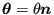
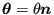

Keyword type: step
This option is used to save selected element variables averaged at the nodalpoints in a frd file (extension .frd) for subsequent viewing by CalculiXGraphiX. The following element variables can be selected (the label is squarebrackets [] is the one used in the .frd file; for frequency calculations withcyclic symmetry both a real and an imaginary part may be stored, in all other cases only thereal part is stored):
The selected variables are stored for the complete model. Due to the averaging process jumps atmaterial interfaces are smeared out unless you model the materials onboth sides of the interface independently and connect the coincidingnodes with MPC's.
For frequency calculations with cyclic symmetry the eigenmodes are generatedin pairs (different by a phase shift of 90 degrees). Only the first one ofeach pair is stored in the frd file. If S is selected (the stresses) twoload cases are stored in the frd file: a loadcase labeled STRESScontaining the real part of the stresses and a loadcase labeled STRESSIcontaining the imaginary part of the stresses. For all other variables onlythe real part is stored.
The key ENER triggers the calculation of the internal energy. If it isabsent no internal energy is calculated. Since in nonlinearcalculations the internal energy at any time depends on theaccumulated energy at all previous times, the selection of ENER innonlinear calculations (geometric or material nonlinearities) mustbe made in the first step.
The first occurrence of an *EL FILE keyword card within a step wipesout all previous element variable selections for file output. If no*EL FILE card is used within a step the selections of the previousstep apply. If there is no previous step, no element variables will be stored.
There are nine optional parameters: FREQUENCY, FREQUENCYF, GLOBAL, OUTPUT,SECTION FORCES, TIME POINTS, NSET, LAST ITERATIONS and CONTACT ELEMENTS. The parameters FREQUENCY and TIME POINTS are mutually exclusive.
FREQUENCY applies tononlinear calculations where a step can consist of severalincrements. Default is FREQUENCY=1, which indicates that the resultsof all increments will be stored. FREQUENCY=N with N an integerindicates that the results of every Nth increment will be stored. Thefinal results of a step are always stored. If you only want the finalresults, choose N very big. The value of N applies to *OUTPUT,*ELEMENT OUTPUT, *EL FILE, *ELPRINT, *NODE OUTPUT,*NODE FILE, *NODE PRINT,*SECTION PRINT ,*CONTACT OUTPUT,*CONTACT FILE and *CONTACT PRINT. If the FREQUENCY parameter is usedfor more than one of these keywords with conflicting values of N, thelast value applies to all. A frequency parameter stays active across several stepsuntil it is overwritten by another FREQUENCY value or the TIME POINTSparameter.
The 3D fluid analogue of FREQUENCY is FREQUENCYF. In coupled calculationsFREQUENCY applies to the thermomechanical output, FREQUENCYF to the 3D fluid output.
With the parameter GLOBAL you tell the program whether you would like theresults in the global rectangular coordinate system or in the local elementsystem. If an *ORIENTATION card is applied to the element at stake, this card definesthe local system. If no *ORIENTATION card is applied to theelement, the local system coincides with the global rectangularsystem. Default value for the GLOBAL parameter is GLOBAL=YES,which means that the results are stored in the global system. If you prefer theresults in the local system, specify GLOBAL=NO.
The parameter OUTPUT can take the value 2D or 3D. This has onlyeffect for 1d and 2d elements such as beams, shells, plane stress, planestrain and axisymmetric elements AND provided it is used in the first step. IfOUTPUT=3D, the 1d and 2d elements are stored in their expanded three-dimensionalform. In particular, the user has the advantage to see his/her 1d/2d elementswith their real thickness dimensions. However, the node numbers are new and donot relate to the node numbers in the input deck. Once selected, thisparameter is active in the complete calculation. If OUTPUT=2D the fields in the expanded elements are averaged to obtainthe values in the nodes of the original 1d and 2d elements. In particular,averaging removes the bending stresses in beams andshells. Therefore, default for beamsand shells is OUTPUT=3D, for plane stress, plane strain and axisymmetricelements it is OUTPUT=2D. If OUTPUT=3D is selected, the parameter NSET is deactivated.
The selection of SECTION FORCES makes sense for beam elementsonly. Furthermore, SECTION FORCES and OUTPUT=3D are mutually exclusive (ifboth are used the last prevails). Ifselected, the stresses in the beam nodes are replaced by the sectionforces. They are calculated in a local coordinate system consisting of the1-direction  , the 2-direction
, the 2-direction  and 3-direction ortangential direction
and 3-direction ortangential direction  (Figure 78). Accordingly, the stress components now havethe following meaning:
(Figure 78). Accordingly, the stress components now havethe following meaning:
For all elements except the beam elements the parameter SECTION FORCES has noeffect. If SECTION FORCES is not selected the stress tensor is averaged acrossthe beam section.
With the parameter TIME POINTS a time point sequence can be referenced,defined by a *TIME POINTS keyword. In that case, output will beprovided for all time points of the sequence within the step and additionally at the end ofthe step. No other output will be stored and the FREQUENCY parameter is nottaken into account. Within a step only one time point sequence can be active. If more thanone is specified, the last one defined on any of the keyword cards*NODE FILE, *EL FILE, *NODE PRINT or *EL PRINT will be active. The TIMEPOINTS option should not be used together with the DIRECT option on theprocedure card. The TIME POINTS parameters stays active across several stepsuntil it is replaced by another TIME POINTS value or the FREQUENCY parameter.
The specification of a node set with the parameter NSET limits the output tothe nodes contained in the set. Remember that the frd file is node based, soelement results are also stored at the nodes after extrapolation from theintegration points. For cyclic symmetric structures the usage of theparameter NGRAPH on the *CYCLIC SYMMETRY MODELcard leads to output of the results not only for the node set specified by theuser (which naturally belongs to the base sector) but also for allcorresponding nodes of the sectors generated by the NGRAPH parameter. Noticethat for cyclic symmetric structures in modal dynamic and steady statedynamics calculations the use of NSET is mandatory. In that case the stresseswill only be correct at those nodes belonging to elements for which ALL nodaldisplacements were requested (e.g. by a *NODE FILE card).
The parameter LAST ITERATIONS leads to the storage of thedisplacements in all iterationsof the last increment in a file with name ResultsForLastIterations.frd (can be opened with CalculiX GraphiX). This isuseful for debugging purposes in case of divergence. No such file is created ifthis parameter is absent.
Finally, the parameter CONTACT ELEMENTS stores the contact elements which havebeen generated in each iteration in a file with the namejobname.cel. Whenopening the frd file with CalculiX GraphiX these files can be read with thecommand ``read jobname.cel inp'' and visualized byplotting the elements in the setscontactelements_st _in
_in _at
_at _it, where
_it, where  is the step number,
is the step number,  the increment number,
the increment number,  the attempt numberand the iteration number.
the attempt numberand the iteration number.
Starting with version 2.14 of CalculiX the selection of ``S'' (stress)automatically triggers the output the stress error estimator ``ERR'' aswell. This can only be avoided by selecting NOE in a positionafter S (either immediately following S, or with some other outputrequests in between, irrespective whether these output requests are on the same keyword card or on different keyword cards).
First line:
Example: *EL FILE S,PEEQ
requests that the (Cauchy) stresses and the equivalent plastic strain is stored in .frd format for subsequent viewing with CalculiX GraphiX.
Example files: beamt, fullseg, segment1, segdyn.